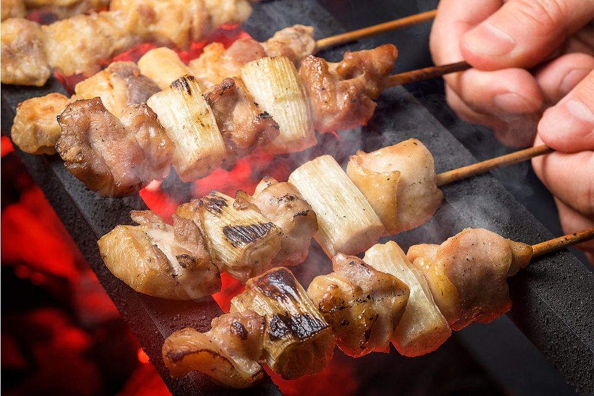

Yakitori

Description
This one is simpler than the rest cause of
the few ingredients that is used. It's called
Yakitori, which is chicken on a stick that is grilled/broiled
and it's glazed with tasty mirin along with other items
to make the sauce!!
I also got to try out these Yakitor's in Japan, not too much
though so I wouldn't get fat haha. But it's definitely a bargain
for such a quick bite!
Ingredients
- Chicken thighs that are boneless and skinless; freep range if
it can be found
- Tokyo Negi or green onions
- Sake
- Mirin
- Soy Sauce
- Brown Sugar
Making Yakitori Sauce
- Add the seasonings to saucepan-soy sauce, mirin, sake,
water, and brown sugar. Add the green parts of the Tokyo
Negi too.
- Bring the mixture to a boil, then reduce the heat to low
- Simmer and allow the sauce to reduce, uncovered, to one-third of
its original volume (roughly 30 minutes)
- Let it cool to room temperature. The sauce is now ready to use
Making Yakitori
- Soak the bamboo skewers for 30 minutes. Use 5 inch bamboo teppogushi
or "gun skewers" that have a flat tab for a handle or use regular bamboo
skewers
- Thread the skewers with pieces of chicken and Tokyo Negi
- Place the skewers on a oven-safe wire rack coated with oil or
cooking spray and set it on a foil-linked baking sheet pan. Cover
the handles with foil.
- Preheat the broiler to High, then broil skewers for 6 minutes
- Brush with yakitori sauce, flip and brush the other side, then broil for
3-4 minutes to caramalize the sauce
- Flip the skewers once more, brush them with the sauce, then broil for 1-2
minutes. Serve immediately.